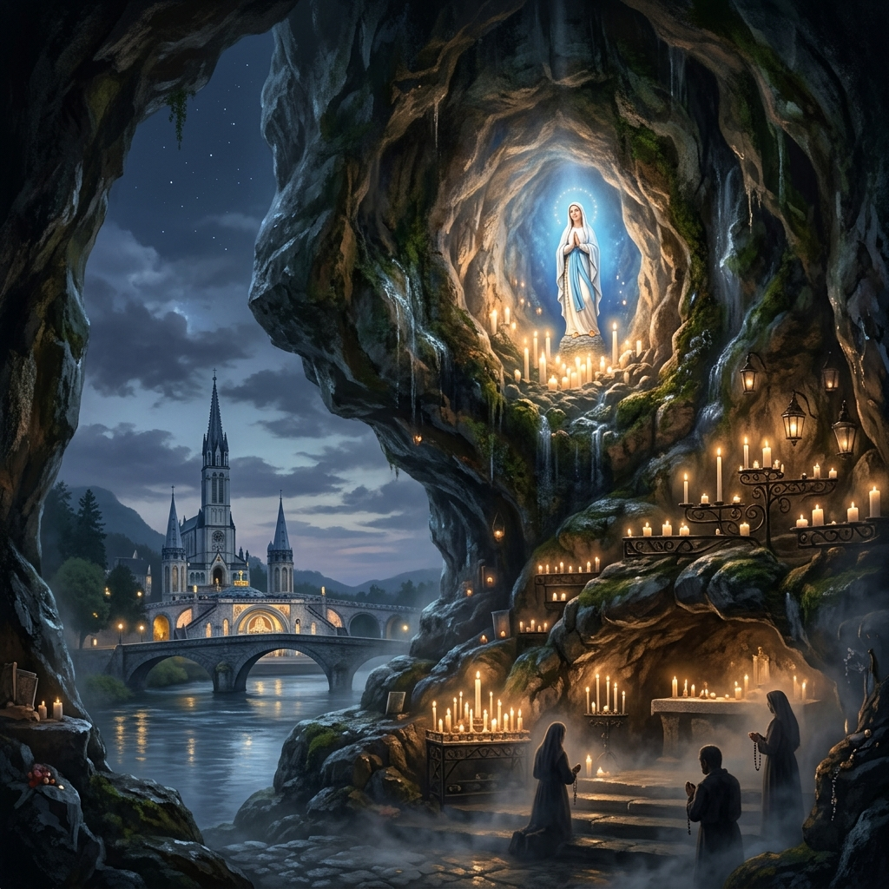
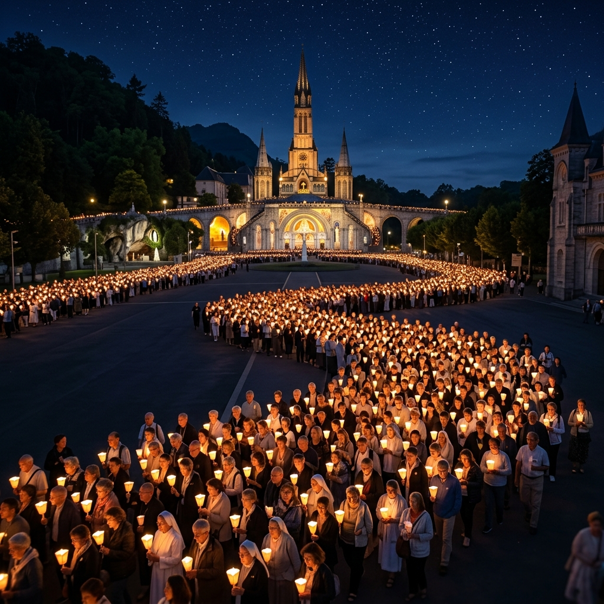
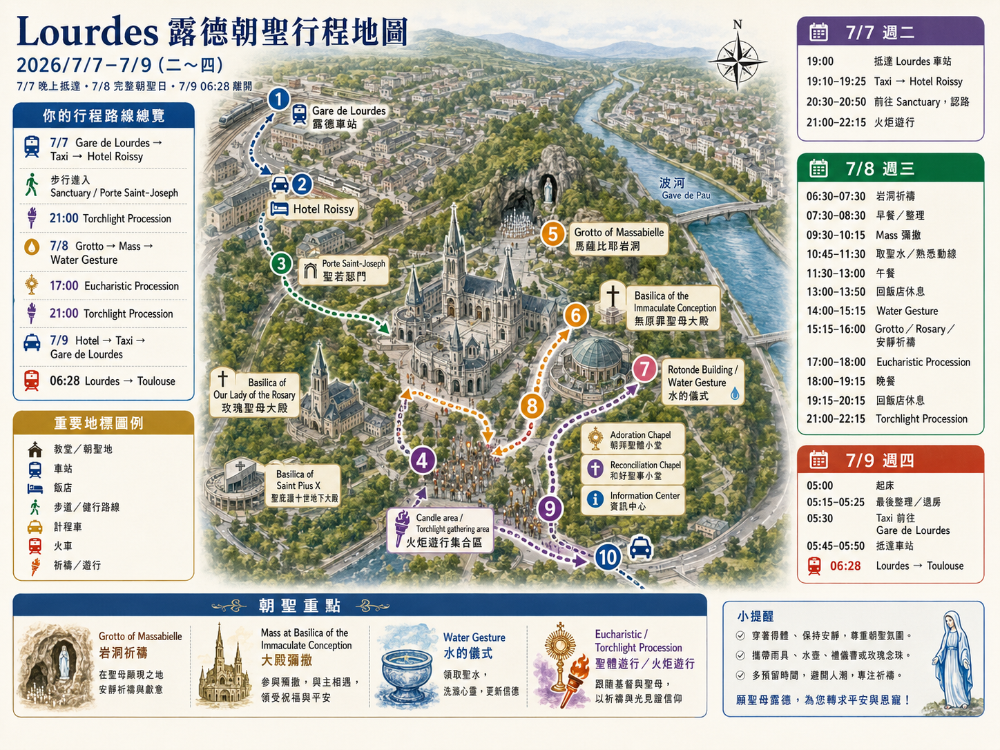

露 德 Lourdes
在脆弱中被聖母擁抱
「我不是因為完全沒有恐懼才來這裡。
我是帶著害怕，仍然願意走向天主的面前。」
朝聖，不是旅行打卡
露德，這個法國南部庇里牛斯山腳下的小城，自 1858 年起成為全球天主教最重要的朝聖地之一。每年有超過六百萬朝聖者從世界各地來到這裡。他們帶來的不是行李箱裡的紀念品，而是各自的脆弱、疾病、失去、渴望與未被說出口的眼淚。
露德不是展示完美信仰的舞台。這裡是人帶著真實生命，走到天主面前的地方。岩洞不等於負面情緒，而是天主願意進入並顯現的內在深處——那些尚未被光照、尚未被安慰的隱藏之地。
「天主不是等你完美了才來。
不是等你完全有信心、完全不焦慮、完全準備好，才與你相遇。
露德的訊息是：你害怕，也可以來。」
聖女伯爾納德
天主為什麼選擇弱小的人？
1844年，伯爾納黛生於法國露德的貧窮家庭。她身體虛弱，有氣喘，讀書不多，甚至一度和家人住進舊監牢改建的破敗小房間 Le Cachot。
天主沒有挑選主教、神學家或社會上有影響力的人，而是挑選了這個被人輕看的小女孩。她的力量不在於學識或口才，而在於一樣最簡單、最難得的特質：忠實地說出自己所看見的，不誇大、不迎合、不改口。
1858年2月11日，14歲的伯爾納黛去 Massabielle 岩洞附近撿柴，聽到風聲，抬頭見到岩洞上方有位美麗的女子。她沒有立刻說「我看見聖母」，只稱她為「那位小姐」，之後她接連在這裡見到聖母共 18 次，直到 1858 年 7 月 16 日最後一次顯現。
給你的靈修問題
我是否相信：即使我有恐懼、焦慮、不確定，天主仍然可以在我身上工作？就像祂在脆弱的伯爾納黛身上工作一樣。
Massabielle 岩洞
邊緣之地的恩寵
露德的顯現沒有發生在金碧輝煌的聖殿，而是發生在 Gave 河邊的 Massabielle 岩洞——一個貧窮孩子撿柴、謀生掙扎的邊緣之地。
這個地點蘊含深刻的神學意義：天主不只在莊嚴、乾淨、體面的地方臨在。祂也在人的貧窮、日常掙扎、被人忽略的地方臨在。
岩洞的五層意義
岩洞是那些平常不敢說出口的地方：害怕、焦慮、脆弱、對失控的恐懼。天主邀請說：「這裡也是我，我願意讓祢進來。」
不只是金錢的貧窮，也是心理的貧窮：我沒有那麼勇敢、那麼穩定、那麼相信自己。但天主不是等你「富足」了才來。
天主偏偏從被忽略的地方開始。你那些你視為「麻煩」的脆弱之處，也許正是天主即將工作的地方。
大教堂讓人往上看，岩洞讓人往裡走。露德的岩洞是你內在旅程的入口：從恐懼 → 準備 → 信靠 → 行動 → 自由 → 感謝。
岩洞裡有水。天主不是只讓你看見黑暗，而是在黑暗處開出泉水。你最貧乏的地方，也可能是恩寵開始流出的地方。
今日默想
「我心中的岩洞是什麼？是恐懼？孤單？不信任自己？還是害怕失控？這些情緒背後有什麼渴望？天主想在這些地方開出什麼泉水？」
18 次聖母顯現 · 1858 年 2 月 11 日 — 7 月 16 日
伯爾納黛在岩洞見到美麗女子。召叫安靜而神秘地開始。
她灑聖水，那位女子只是微笑。信仰需要分辨，不是盲目接受。
聖母說：「我不承諾讓你在今世幸福，而是在另一個世界。」
「悔改，悔改，悔改！為罪人向天主祈禱。」露德核心不是神蹟，而是悔改。
聖母指示她去挖掘，起初是混濁的泥水，後來泉水慢慢湧出。恩寵從陰暗處流出。
「讓人們列隊前來祈禱，並在這裡建一座小堂。」今日的燭光遊行由此而來。
「我是無原罪始胎（I am the Immaculate Conception）。」此為整個露德顯現的核心宣告。
岩洞已被封鎖，伯爾納黛從河的另一邊仍看見聖母。距離不能阻斷恩寵。
醫治泉水
天主在岩洞裡開出生命
自 1858 年 2 月 25 日起，泉水從 Massabielle 岩洞的泥土中湧出。這泉水不是魔法，而是一個記號——天主能在人最貧乏、最害怕、最沒有把握的地方，開出生命。
伯爾納黛在泥土中挖掘，起初出來的水是混濁的，讓旁人覺得她很奇怪。這一點很重要：恩寵剛開始流動時，不一定像我們想像的那樣清楚、漂亮、完整。有時候，恩寵的最初形式是：「我開始願意承認自己害怕。」
泉水不是魔法
它是記號，提醒我們：洗禮、潔淨、悔改、更新、被天主重新觸摸。不是「喝了水就立刻不怕」，而是「讓天主慢慢觸碰我的恐懼」。
從岩洞流出
泉水不是從宮殿或大教堂流出，而是從岩洞流出。天主的生命，常常在我們最缺乏、最貧窮、最需要祂的地方，開始工作。
治癒的真實意義
治癒不一定是「立刻完全不怕」。真實的治癒可能是：我還會怕，但不再完全被恐懼控制。恐懼不再是唯一的帶路者。
身體性的信仰
你用手接觸水，用水觸摸額頭。朝聖不只用頭腦，也用身體。承認「我需要天主」，這本身就是一種信德的行動。
泉水可以洗淨什麼？
「我必須完全準備好才可以開始」
天主，請洗淨我必須完全準備好才敢開始的焦慮。請幫助我做好該做的準備，也學會放下不能控制的部分。
「我只能避凶，不敢趨吉」
天主，請洗淨我只敢求避凶的心。請慢慢教我相信，我也可以走向祝福。
「我必須保護所有人」
天主，請洗淨我過度承擔的責任感。請讓我知道，我不是每個人的救主，我可以愛人，也可以把所愛的人交託給祢。
「我不相信自己可以」
天主，請洗淨我對自己的不信任。請讓我用新的眼光看自己——我是正在學習自由，也已經有能力往前走的人。
苦路默想
耶穌陪我走過痛苦，不是讓我一個人承受
露德的苦路（Stations of the Cross）不是普通步道，而是祈禱之路。Prairie Stations of the Cross 位於 Gave 河旁，以 17 處 Carrara 大理石作品，帶朝聖者從基督受難默想到復活。
苦路不是「崇拜痛苦」，也不是叫你沉溺在傷口裡。苦路真正要讓你看見的是：耶穌如何走進人類最深的黑暗，使黑暗不再是天主缺席的地方。
照見你對自己的嚴厲
我是否曾太嚴厲地審判自己？一焦慮就責備，一出錯就覺得不夠好。跌倒不是失敗，跌倒後願意再起來，才是路的一部分。
我現在背著什麼重擔？
你是否常常覺得自己要把所有事情扛起來？照顧家人、消除所有風險、把準備做到120%？苦路提醒你：有些重擔，耶穌沒有要求你一個人背。
跌倒不是終點
如果連耶穌在受難路上都有跌倒的圖像，你的跌倒也不需要被看成失敗。成長不是從不跌倒，成長是跌倒後不再用責備把自己打倒第二次。
你可以接受幫助
接受幫助不是失敗。真正成熟的獨立，不是什麼都自己扛，而是知道什麼時候需要求助。耶穌願意讓西滿幫祂背十字架，你也可以。
有些陪伴不立刻解決問題
聖母沒有把十字架拿走，但她在那裡。有些陪伴是：「我沒有離開你。我陪你在這裡。你不是一個人。」這也是你來露德最深的邀請。
痛苦不是最後一句
苦路由 17 處作品組成，終點不是死亡，而是復活。你的恐懼不是最後一句。你的焦慮不是最後一句。復活才是最後一句。

燭光遊行
在黑暗中，仍然選擇跟著光走
每年4月至10月，每天晚上9點，露德的夜間燭光玫瑰經遊行在聖所舉行。這是一個非常古老的祈禱傳統——成千上萬的朝聖者拿著微弱的蠟燭，跟著聖母像，一起祈禱玫瑰經，慢慢行進。
為什麼是在夜晚？
夜晚讓人感覺不確定、安靜、更接近內在，也更容易碰觸到害怕、孤單、未知。信仰不是因為人生完全沒有黑暗才開始——信仰是在黑暗仍然存在時，我仍然選擇跟著光走。
蠟燭為什麼這麼小？
一根蠟燭不能把整個黑夜變成白天，但它能照亮眼前的一小段路。天主給的常常是「下一步的光」，不是整條路的保證。你不需要一次看見整條路，你只需要在今天，跟著這一點光走下一步。
為什麼是一起走？
你在隊伍中走，旁邊有來自不同國家的朝聖者——有病人、有照顧者、有帶著眼淚祈禱的人。這提醒你：我不是一個人走。我的祈禱在教會的祈禱中，我的勇氣也可以在眾人的光中被扶持。
恐懼不再帶路，天主帶路
以前恐懼可能常常帶路：因為怕，所以只敢避凶；因為怕，所以懷疑自己。燭光遊行邀請你換一個帶路者：讓天主帶路。讓信德帶路。讓你想成為更自由的自己的渴望帶路。
「我不是因為沒有黑暗才相信，
而是在黑暗中仍然選擇跟著光走。」
— 露德燭光遊行的靈性意義
露德聖所地圖
認識聖所的空間，讓腳步跟著心走

聖所核心，聖母顯現之地。在這裡安靜祈禱，觸摸岩石，感受天主的臨在。
朝聖者取水、洗手、參加 Water Gesture 的地方。帶著祈禱領受記號。
連到 3月25日聖母顯現的核心宣告。參加彌撒，進入教會的祈禱。
沿 Gave 河旁行走，17 處大理石作品，從受難默想到復活的祈禱之路。
每晚21:00，4月至10月。朝聖者聚集，拿著燭光跟著聖母像行進。
「聖母媽媽，我來了。
我帶著媽媽沒有一起來的遺憾，也帶著我多年來的眼淚。」
有時候，朝聖是帶著一個人來到這裡，那個人卻已經不在了。也許你曾經希望能和她一起來露德感謝聖母。也許那個心願一直放在心裡，卻來不及實現。
露德不是說：遺憾不重要。露德是說：你可以把遺憾帶來，放在聖母面前。
你帶著她的記憶來，就是帶著她來。
你也可以把一切你所深愛的人——媽媽、爸爸、家人、姪子、神父、朋友——都在這裡交託給聖母。你不需要永遠當他們的救主。你可以愛他們，也可以把他們交出去。
「我帶著媽媽，帶著對她的思念與愛，帶著那個沒有一起來的遺憾，來到祢面前。請讓她在天國安息，沒有病痛，被祢的光包圍。」
「聖母媽媽，請保護我所有愛的人。請接住我放不下的心。請讓我學會：我可以深愛他們，但不需要把自己的命運和他們的命運綁在一起。」
「天主，我不是帶著完美來朝聖。我帶著傷、帶著多年的眼淚、帶著那些還沒被整理好的地方。但我願意來。請讓露德成為我重新開始的地方。」
帶著什麼來，交出什麼去
我帶著＿＿＿來到露德
例如：飛行恐懼、焦慮、對自己能力的不確定、想學習自由的渴望
我最需要被天主醫治的是＿＿＿
例如：不相信自己可以獨立、只敢求避凶不敢趨吉、過度保護別人的習慣
我最害怕的是＿＿＿
例如：在陌生地方失控、孤單、無法處理突發狀況、讓重要的人失望
我願意交託的是＿＿＿
例如：想控制一切才安心的習慣、對家人命運的過度承擔、對未來的不確定感
我希望從露德帶走的是＿＿＿
例如：更深的信靠、更自由的心、更穩定的勇氣、從恐懼走向自由的一小步
點燭光，交託心靈
Massabielle 虛擬祈願岩洞
「聖母媽媽，我來了。我帶著多年來的眼淚、恐懼，與對家人的牽掛……」
請在下方寫下你最想帶到聖母面前的託付，點燃一盞虛擬燭光，讓它在這裡永遠燃燒。